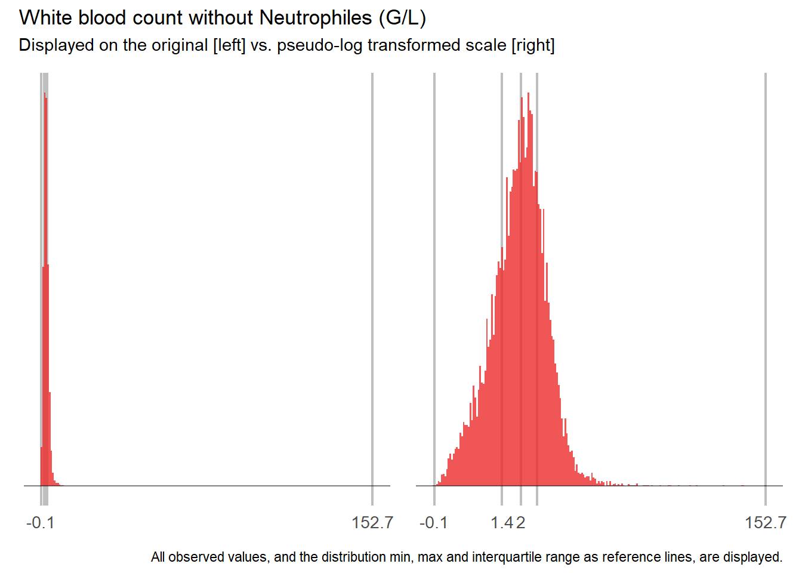

7 Analysis ready data - second iteration
7.1 dervive WBC_NEU

8 Set analysis flags for
Handled by ADSL
Flags within ADBL
$pivotal_vars [1] “WBC” “AGE”
$vip_vars [1] “WBC” “AGE” “BUN” “CREA” “NEU” “PLT”
$leuko_related_vars [1] “WBC” “NEU” “EOS” “BASO” “LYM” “MONO”
$leuko_ratio_vars [1] “NEUR” “EOSR” “BASOR” “LYMR” “MONOR”
$acute_related_vars [1] “FIB” “CRP” “ASAT” “ALAT” “GGT”
$remaining_vars [1] “MCV” “HGB” “HCT” “MCH” “MCHC” “RDW” “MPV” “NT” “APTT” “NA.” “CA” “PHOS” “MG” “HS” “GBIL” [16] “TP” “ALB” “AMY” “PAMY” “LIP” “CHE” “AP” “LDH” “CK” “GLU” “TRIG” “CHOL” “PDW” “RBC”
[1] "c(\"PLT\", \"CREA\", \"BUN\", \"NEU\", \"AGE\", \"WBC_noNEU\")"